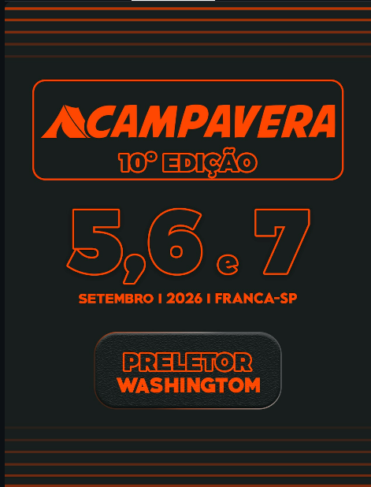
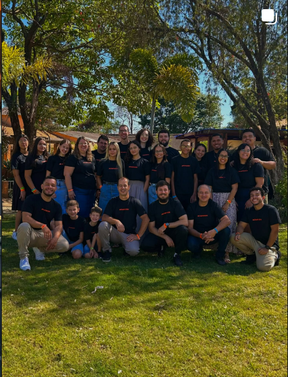
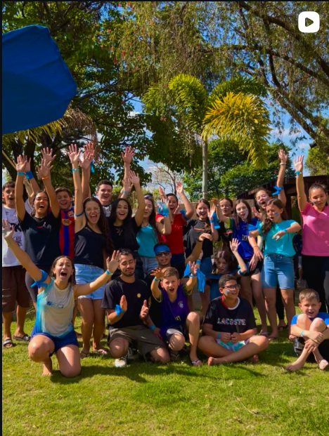
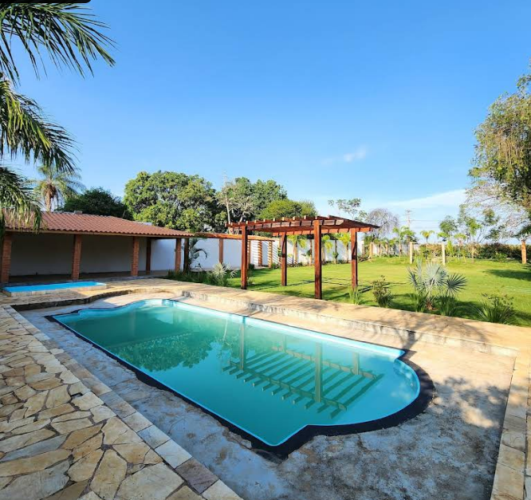
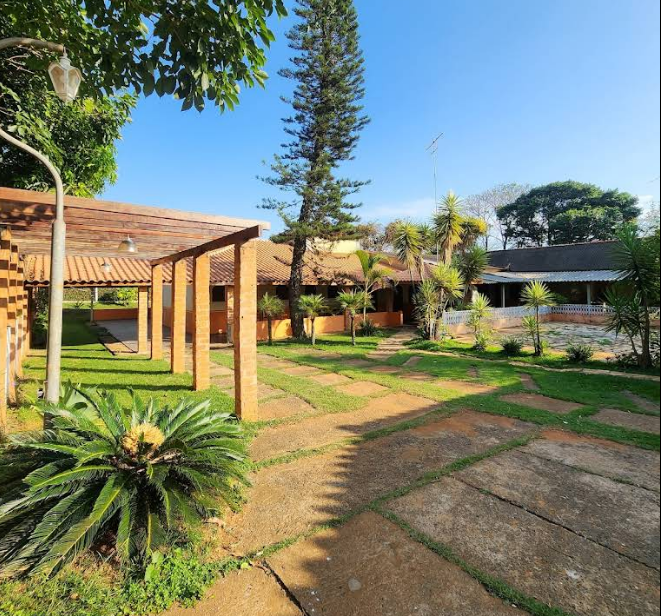
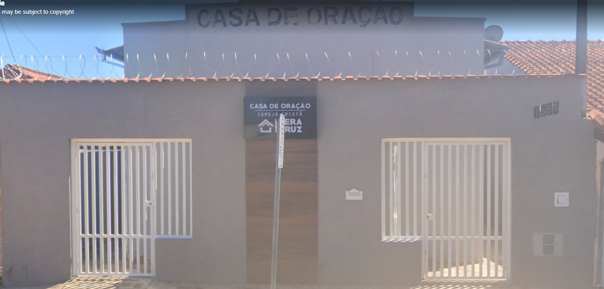

Acampavera
Fé, amizade, diversão e comunhão com Cristo.
Serviços



O Acampavera oferece experiências de comunhão com Cristo através de momentos de louvor, gincanas, dinâmicas, palestras, refeições coletivas, atividades recreativas e fortalecimento da amizade entre os participantes.
Referências
Imagens e informações obtidas através do Instagram oficial do Acampavera:
https://www.instagram.com/acampavera_
Informações sobre localização obtidas através do Google Maps.
Conheça o Acampavera
O Acampavera é um evento cristão voltado para jovens da região de Franca-SP. Seu principal objetivo é proporcionar momentos de comunhão com Jesus Cristo, fortalecendo a fé, os valores cristãos e a amizade entre os participantes.
Além do crescimento espiritual, o acampamento oferece gincanas, jantares temáticos, momentos de lazer, louvor, oração e muita diversão.
Criado em 2016 pela Casa de Oração Jardim Veracruz, o Acampavera atualmente recebe jovens de diversas cidades da região e possui capacidade para até 100 participantes.
Missão
Promover a comunhão com Jesus Cristo por meio de momentos de adoração, aprendizado, amizade e diversão, contribuindo para o crescimento espiritual dos jovens.
Valores
- Fé em Jesus Cristo
- Comunhão
- Respeito ao próximo
- Integridade
- Amor e serviço
- Responsabilidade
Local
O Acampavera acontece em um espaço preparado para receber jovens com conforto, segurança e muita diversão, se chama Morada do Sol e fica dentro da cidade de Franca-SP.


Endereço
R. Eduardo Bernal, 380 - Morada do Sol, Franca - SP, 14406-257Ver localização
Parceiros
O Acampavera conta com o apoio da Casa de Oração Jardim Veracruz, Casa de Oração Jardim Portinari e diversos voluntários que ajudam na organização e realização do evento.

Endereço
R. Josué Domingos de Campos, 1558 - Res. Jardim Vera Cruz, Franca - SP, 14407-486Nossos Parceiros
- Casa de Oração Jardim Veracruz
- Casa de Oração Jardim Portinari
- Membros voluntários da cidade de Passos-MG
- Equipe de apoio e organização do Acampavera
Ver localização